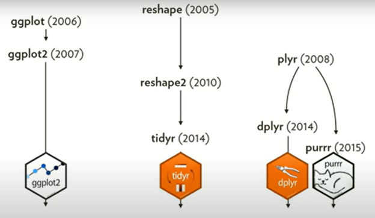
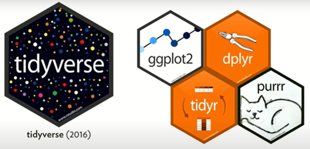
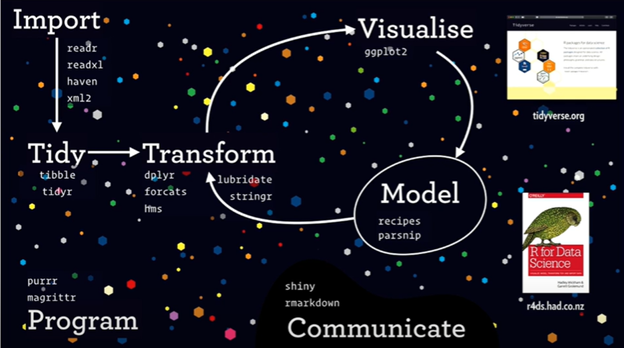

Preparation for Class 05
Big Data Analytics Pitfalls
Big data offers immense potential for insights and innovation, but it also introduces significant risks. One of the key pitfalls is Big Data Hubris—the assumption that large datasets can replace traditional data collection and analysis methods. The case of Google Flu Trends (GFT) discussed in Lazer et al.’s article in Science (2014) exemplifies this.
GFT used Google search data to predict flu outbreaks but ultimately failed due to overconfidence in the data’s predictive capabilities. Despite having millions of search queries, the model missed critical trends, such as the 2009 H1N1 pandemic, and consistently overestimated flu prevalence compared to CDC data. This failure illustrates that data volume alone does not guarantee accuracy; attention must be paid to the quality, validity, and reliability of data sources.
Another key issue is algorithm dynamics that may lead to endogeneity. Changes in the underlying algorithms and user behaviors, such as modifications in Google’s search engine, can alter the data-generating process, leading to inaccurate predictions. In the GFT case, these changes contributed to persistent errors, further complicating the model’s ability to predict flu trends accurately. As a result, big data analytics can be vulnerable when it relies too heavily on ever-evolving, non-static data sources.
Overfitting and Overparameterization
Overfitting occurs when a model is tailored too closely to the specific data it was trained on, capturing noise rather than meaningful patterns (signal). GFT demonstrated overfitting by correlating flu-related search terms with a small set of historical flu cases. This resulted in the inclusion of spurious variables, such as high school basketball searches, which were unrelated to flu outbreaks. Although these variables fit past data well, they failed to predict future flu activity, highlighting the dangers of overfitting in big data models.
Similarly, overparameterization—using too many variables in a model—exacerbates overfitting by making the model overly sensitive to small variations in the training data. GFT’s reliance on millions of search terms without sufficient filtering or theory-driven reasoning caused the model to generalize poorly. This led to overestimations of flu prevalence for over two years.
To mitigate these issues, it is essential to combine big data methods with traditional approaches. For example, integrating GFT data with CDC reports and recalibrating the model based on real-world inputs improved predictive accuracy. This approach shows that while big data can provide valuable insights, it must be supplemented with well-established analytical methods to avoid the pitfalls of overfitting, overparameterization, and dynamic data sources.
References
Lazer, D., Kennedy, R., King, G., & Vespignani, A. (2014). The Parable of Google Flu: Traps in Big Data Analysis. Science (American Association for the Advancement of Science), 343(6176), 1203–1205. https://doi.org/10.1126/science.1248506
Overfitting. (n.d.). In Wikipedia. Retrieved September 25, 2024, from https://en.wikipedia.org/wiki/Overfitting
Note on Hadley Wickham’s Keynote Lecture at EMBL
In his keynote lecture at EMBL, Hadley Wickham highlights several key technologies and techniques essential for data visualization and data science through the lens of the R programming environment.

Source: Hadley Wickham, Keynote Lecture at EMLB
Tidyverse and Data Science Workflow
Wickham introduces the concept of the tidyverse, a collection of R packages, such as ggplot2, dplyr, tidyr, and purrr, that simplify data manipulation, transformation, and visualization. His focus is on how these tools make data analysis more efficient by promoting consistency in data formatting and handling.

Source: Hadley Wickham, Keynote Lecture at EMLB
“Tidy” data, a central principle in his work, ensures that each variable is stored in its own column, and each observation gets its own row. This format makes data easier to analyze and visualize.

Orthogonal Components
Wickham emphasizes the importance of breaking down data into orthogonal components, meaning that different variables or features of the data should be analyzed separately to gain clear insights. This is akin to separating the dimensions of a dataset to better visualize and understand its structure. He demonstrates this concept with visualizations, such as using GDP per capita versus life expectancy in the well-known Gapminder World dataset and its visualization by Hans Rosling.
Importance of Code
A significant theme in Wickham’s presentation is the power of code. He stresses that code is not only for computation but also serves as text, which makes it readable and reproducible. This focus on the reproducibility of data analysis is vital for transparency and verification in research, allowing others to follow and replicate analyses.